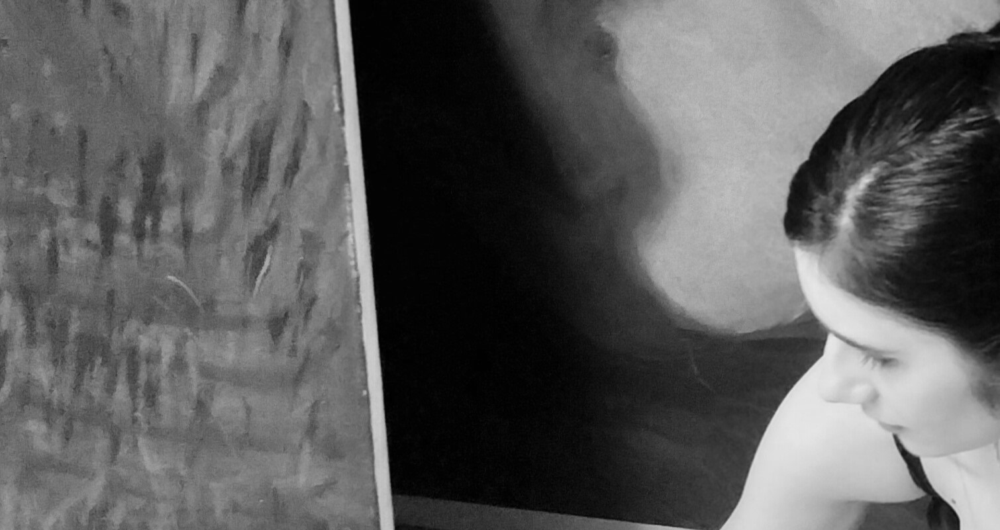

Artist Statement
Moje dielo je prieskumom neuchopiteľného plynutia času, pominuteľnosti a bytia. Skrze symboliku a abstraktné obrazy, ktoré evokujú štruktúru krajiny a rastlín ako metafory cyklu života, skúmam spojenie medzi minulým a budúcim, medzi tým, čo mizne, a tým, čo zostáva. Medzi tým, čo je hmatateľné, a tým, čo je abstraktné a neuchopiteľné, ako čas sám. Vo svojich figurálnych až naratívnych dielach zobrazujem bytie ako niečo uchopené v prítomnosti, pričom začiatky a konce slúžia ako rámec pre abstraktné predstavy o čase. Zásadným elementom v mojej tvorbe je rukopisné gesto, ktoré odráža zložitosť vnútorného prežívania a opakujúce sa cykly. Či už je to línia stebla trávy, alebo štruktúra poľa, snažím sa, aby každé dielo navodzovalo prúd času a zároveň divákovi ponúkalo možnosť objaviť svoje vlastné asociácie s témou.
Výstavy
-
2024 | - Skupinová výstava - VI. Medzinárodné bienále aktu, Crvena komuna, Petrovac, Montenegro, 06.07.2024- 06.10.2024
-
2024 | – Skupinová výstava - „Demo 21“, kurátor/ka: Matúš Maťátko, Gabriela Birošová, sprievodná výstava pre Human Forum, Obradná sieň historickej Radnice, Banská Bystrica, 19.11.2024 Spolu vystavujúci: Alexander Boška, Arnold Marcsa, Emília Farkašová, Jessica Mozgová, Matúš Gejdoš, Michaela Lengyelová, Pavol Šeliga
-
2024 | – Skupinová výstava - Festival mladého umenia Tvor, Obchodný dom Dargov Sečovce, 30.08.2024-01.09.2024
-
2024 | – Skupinová výstava - Skupinová výstava - VečierOK, Sliačské kúpele, 10.8.2024 Spolu vystavujúci: Gabriela Birošová, Adriana Jánošová Bútorová, Zuzana Kosec, Nina Haasová, Kristína Simkaničová, Jessica Mozgová, Michaela Lengyelová, Martin Jombík
-
2023 | – Skupinová výstava -
“Je demokrácia v ohrození?” kurátorka: Gabriela Birošová, sprievodná výstava pre Human Forum, Radnica, Banská Bystrica, 28.-30.11.2023
Spolu vystavujúci: Sandra Cseresznyésová, Erika Czaková, Zuzana Dolinay, Lukáš Labuda, Matúš Maťátko, Pavol Šeliga
-
2023 | – Skupinová výstava - “Spomienky na prítomnosť”, kultúrno-turistické centrum Hájovňa - červená studňa, Banská Štiavnica, 16.09.2023
Spolu vystavujúci: Zuzana Dolinay, Monika Hurajová, Kristína Kerekešová, Dominika Kovačiková, Terezia Nunhardtová, Petra Rubešová, Šimon Tóth
-
2022 | – Skupinová výstava - “Inequality”, kurátor: Michael Luzsicza, Ateliér strop nad Kvetárňou, Banská Bystrica, 4.10. - 30.11. 2022
Spolu vystavujúci: Monika Hurajová, Kristína Kerekešová, Ivana Ľachová, Terézia Nunhardtová, Petra Rubešová, Michaela Štieberová
